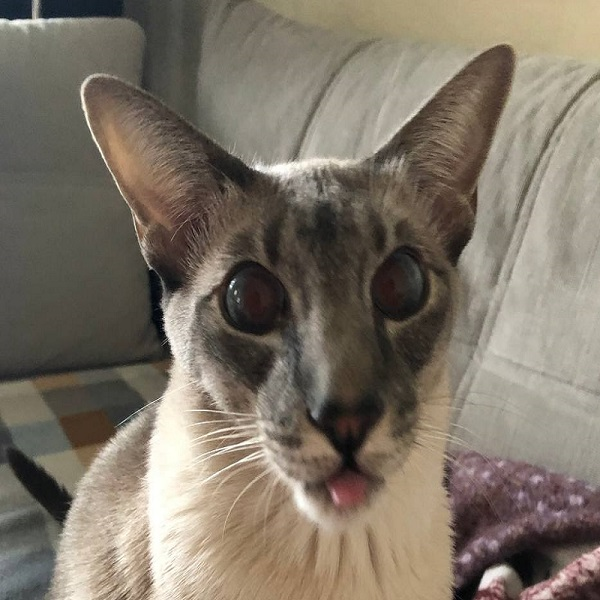

Когда на улице холодно, Кокос всегда радует своих друзей и соседей своим забавным обликом в этом ярком комбинезоне. Он прыгает и играет, несмотря на холод, и всегда готов к новым приключениям. Его комбинезон не только защищает его от холода, но также позволяет ему выглядеть стильно и модно.
Привет, меня зовут Кот Кокос!
Приветствую тебя, дорогой друг! Меня зовут Кокос, я — балинезийский кот. Моя порода известна своей красотой и грациозностью, но я не хочу ничем хвастаться. Я просто люблю играть и есть вкусняшки, которые мой любимый хозяин Влад готовит для меня. Хоть я и трусливый кот, я всегда готов поддержать своего хозяина и провести время вместе. Я не очень люблю мыться, но стараюсь выглядеть красиво, чтобы всегда доставлять удовольствие своему хозяину. Я рад знакомству с тобой и надеюсь, что мы станем хорошими друзьями! Муррр!
Кокос — это прекрасный кот, который обожает спать и валяться на диване. Его любимое времяпрепровождение — это долгие сны на мягкой подушке, после которых он обычно просыпается весьма удовлетворенный и счастливый. Так же Кокос очень любит кушать вкусняшки.
Не смотря на свою любовь к отдыху и расслаблению, Кокос также очень любопытный кот и часто исследует свой дом, особенно когда никого нет дома. Он может залезть на шкафы, полазить по столам и стульям, и даже попробовать что-то новое и вкусное на кухни.
Кокос — настоящий ласковый кот, который обожает, когда его гладят и целуют. Он всегда рад устроиться на колени и позволить себя погладить, а иногда даже заснуть прямо на человеческих руках. Кокос любит своего хозяина и всегда радует его своей ласковостью, играми и ласками.